|
|
|

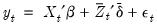 multiple breaks and associated coefficients which minimize the sums-of-squared residuals of the regression model Equation (34.1).
If the desired number of breakpoints is not known, we may specify a maximum number of breakpoints and employ testing to determine the “optimal” number of breakpoints. The various test approaches are outlined in detail in “Global Maximizer Tests”, but briefly speaking, involve:Bai (1997) describes an intuitive approach for obtaining estimates for more than one break. The procedure involves sequential application of breakpoint tests.
 periods and
periods and  potential breaks (producing
potential breaks (producing  regimes). For the observations 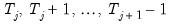 in regime
regimes). For the observations 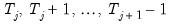 in regime  we have the regression model
we have the regression model variables are those whose parameters do not vary across regimes, while the
variables are those whose parameters do not vary across regimes, while the  variables have coefficients that are regime-specific.
variables have coefficients that are regime-specific. and 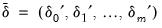 where 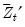 is an expanded set of regressors interacted with the set of dummy variables corresponding to each of the
and 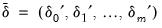 where 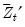 is an expanded set of regressors interacted with the set of dummy variables corresponding to each of the  regime segments.
regime segments. -break optimizers are the set of breakpoints and corresponding coefficient estimates that minimize the sum-of-squares for that model.
-break optimizers are the set of breakpoints and corresponding coefficient estimates that minimize the sum-of-squares for that model. versus no breaks procedure may be applied sequentially beginning with a single break until the null is not rejected. Alternately, it may be applied to all breaks with the selected break being the highest statistically significant number of breaks, or it may employ the unweighted or weighted double maximum statistics (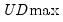 or 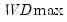).
versus no breaks procedure may be applied sequentially beginning with a single break until the null is not rejected. Alternately, it may be applied to all breaks with the selected break being the highest statistically significant number of breaks, or it may employ the unweighted or weighted double maximum statistics (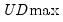 or 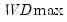). versus
versus  globally determined breakpoints. The procedure is applied sequentially, beginning with a single break, until the null is not rejected. This approach is a modified Bai (1997) method in which, at each test step, the
globally determined breakpoints. The procedure is applied sequentially, beginning with a single break, until the null is not rejected. This approach is a modified Bai (1997) method in which, at each test step, the  breakpoints under the null are obtained by global optimization, and the candidate breakpoints are obtained by sequential estimation.
breakpoints under the null are obtained by global optimization, and the candidate breakpoints are obtained by sequential estimation.